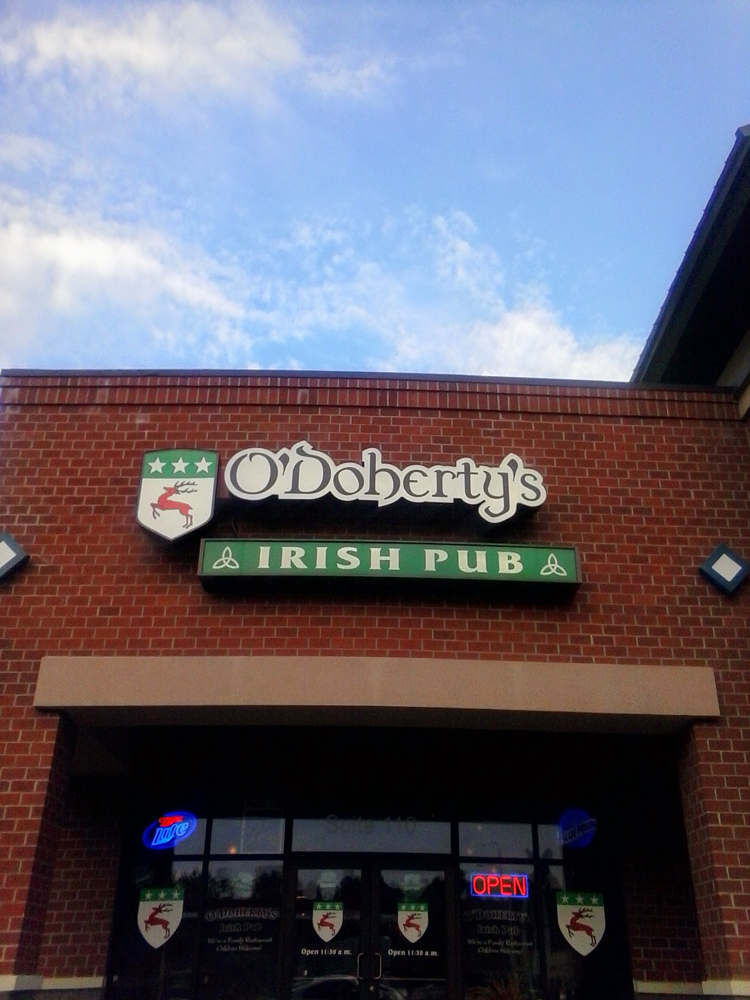

Posted to: The Google+ Heraldry Community
Posted by: Jeffrey Garrison (JBGarrison72)
Created on: August 2 2014 at 4:56
There are two O'Doherty's locations in Spokane. One is downtown and this one is on the north side. This is an example I think of co-opting arms without realizing that sharing a surname doesn't immediately authorize use of another's arms. Still, it's nice to see such a bold display of arms in an American city.

Capitalizing on a good looking coat of arms associated with an Irish surname.